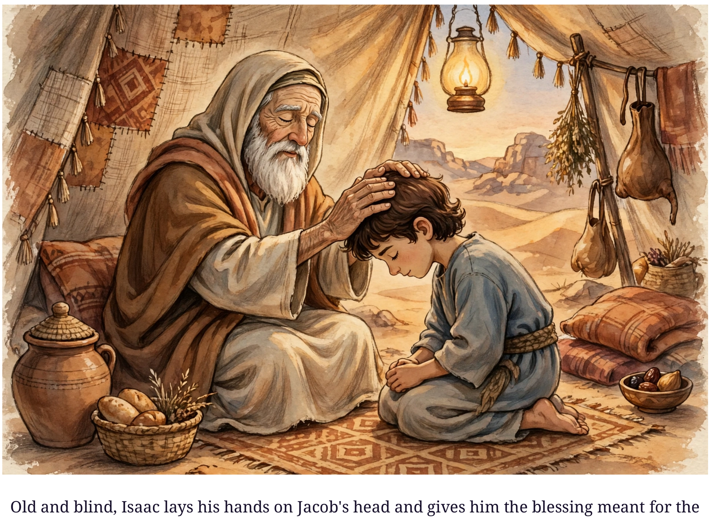

Isaac and Rebekah have twin sons, Esau and Jacob. Hungry from the field, Esau trades his birthright for a bowl of lentil stew — and later, old and blind, Isaac gives Jacob the blessing meant for the firstborn. Between the two, Isaac digs wells in the land of the Philistines and names the last one Rehoboth, "room": at last, there is space for everyone.
Listen
Full Hebrew reading — 12 minutes 42 seconds
All 106 verses, Genesis 25:19–28:9, read in Hebrew.
Download the audio (MP3)Read
Large-print PDF — for reading on screen
Pointed Hebrew text, large print, 12 pages.
Open the large-print PDFCompact PDF — for printing
The same pointed text, set to use as little paper as possible while staying readable. 5 pages.
Open the compact PDFOne-page extras
Each extra is a single page, its own PDF.
- 🎨 Coloring page
- ❓ Quiz page — in Hebrew
- 🖼️ Illustration page
- 🔤 Hebrew words to learn
- 📖 Story summary
- 🗺️ Verse map
- 💬 Discussion questions
- ✨ Theme poster
- 🕯️ Candle-lighting page
This portion follows the updated format: the quiz is in Hebrew, word meanings are shown as sketches, and candle-lighting times are for Jerusalem.